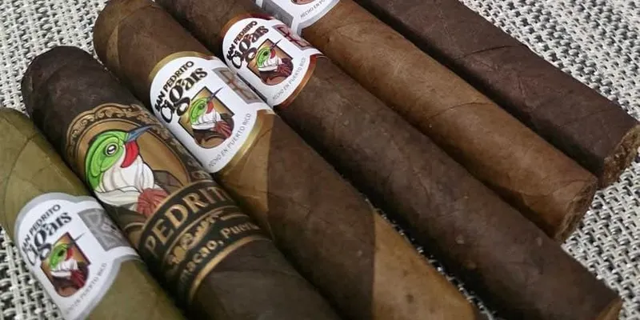

San Pedrito Barber Pole
De San Pedrito Cigars · Humacao, Puerto Rico
Publicado en su IG el 28 ago 2026 (#hechoenpuertorico).
- Capa: Barber Pole
- Vitolas: 6 x 56
Fuentes: 1
Ver San Pedrito Barber Pole en la app, califícalo y guárdalo en Mi Hoja.